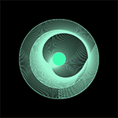

Situación Compartida
Proyecto final: "Situación Compartida"
se estudia la escultura de Jorge Oteiza para experimentar con el vacío del cubo
primer boceto del proyecto
enlace al proyecto final
Este semestre se ha estudiado y experimentado con P5js, a través de la experiencia, la versatilidad y el flujo comunicativo entre el usuario y el programa. Propongo construir un pequeño espacio virtual, con la cualidad de que este adquiera sentido en relación a la propia experiencia del usuario interactuando con los parámetros establecidos en el sketch. Que el usuario que al experimentar y posteriormente identificar los cambios pueda tomar decisiones y ver la imagen que quiere que se forme.
La idea inicial es un sujeto X que se inserta dentro de un cubo (espacio delimitado). Las variables que pueden ser alteradas en base a la interacción son conocidas de manera sensorial por el usuario, logrando así que este pueda ejercer relaciones y jugar en base a su propia experiencia extrapolandola a este personaje virtual.
Siendo este cubo/espacio delimitado y el sujeto X una alegoría a el control de las redes sobre nosotros, el control que podemos tener sobre ellas o una invensión consensuada.
Las variables interrelacionadas que fueron aplicadas son: Luz de ambiente y luz dirigida a un punto (se controlan con el mouse); velocidad; tamaños cubo a y b, y recursión (sliders)
Proyectos del semestre
retrato
compuesto con el fin de construir una ilustración
liviana en el espacio, para ello se utiliza noStroke()
remolino caótico
Se crea una figura infinita y de ritmo constante en base a lineas inscritas en
identidad circular, simulando un agujero negro

burbuja, ciclo for
Esta animación simula ser una burbuja que flota en un espacio, curvandose en lo liviano hasta llegar
a su punto de desaparición

souvlaki space station
a través de un recorrido de lineas delimitadas por un círculo
se crea una suerte de caleidoscopio que simula órbitas planetarias en modo de vórtex

espiral
inicia condensado y se expande lento, generando un vacío que
construye una propuesta visual confusa o de movimiento
exploración proyecto
experimento para internalizar el mundo 3d y sus posibilidades, se trabaja luz
de ambiente y de punto
recursión pirámide
para lograr la forma me enfoqué en romper la simetría de expansión.
(pasar el mouse de un lado al otro de la pantalla)

exploración proyecto
Se integra interacción relacionada al tamaño del cubo a través de sliders,
se agrega al personaje y luces (mover el mouse)
pizarra elíptica
canvas interactivo de dibujo, al presionar el mouse cambia el pincel
y con la tecla borrar se vuelve al lienzo en blanco

proyecto final
Luz de ambiente y luz dirigida a un punto (se controlan con el mouse); velocidad;
tamaños cubo a y b, y recursión (sliders)